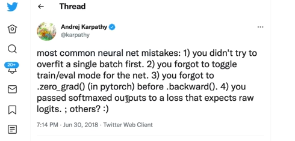

Backpropagation in Neural Networks, photo credit to GeekforGeek
1.1 intro & micrograd overview - what does your neural network training look like under the hood?
What is MicroGrad ❓: a tiny auto-grad (automatic gradient) engine, implement of backpropagation ~ itertively tune the weight of that nn to minimize the loss function -> improve the accuracy of the neural network. Backpropagation will be the mathematical core of any modern deep neutral network like, say pytorch, or jaxx.
Installation: pip install micrograd
Example:
Code
from micrograd.engine import Value1a = Value(-4.0)b = Value(2.0)c = a + bd = a * b + b**3c += c +1c +=1+ c + (-a)d += d *2+ (b + a).relu()d +=3* d + (b - a).relu()e = c - df = e**2g = f /2.02g +=10.0/ f3print(f'{g.data:.4f}') # prints 24.7041, the outcome of this forward passg.backward()4print(f'{a.grad:.4f}') # prints 138.8338, i.e. the numerical value of dg/daprint(f'{b.grad:.4f}') # prints 645.5773, i.e. the numerical value of dg/db
1
Micrograd allows you to build mathematical expressions, in this case a and b are inputs, wrapped in Value object with value equal to -4.0 and 2.0, respectively.
2
a and b are transformed to c, d, e and eventually f, g. Mathematical operators are implemented, like +, *, **, even relu().
3
Value object contains data, and grad.
4
Call backpropagation() process.
24.7041
138.8338
645.5773
1.2 derivative of a simple function with one input
❓What exactly is derivative❓
Code
import mathimport numpy as npimport matplotlib.pyplot as plt%matplotlib inline
A simple quadratic function:
Code
def f(x):return3*x**2-4*x +5
Code
f(3.0)
20.0
Input also can be an array, we can plot it for visibility.
We say given b = -3.0 and c = 10.0 are constants, the derivative of d at a = 2.0 is -3.0. The rate of which d will increase if we scale a!
d1: 4.0
d2: 3.997
slope: -3.0000000000001137
1.4 starting the core Value object of micrograd and its visualization
So we now have some intuitive sense of what is derivative is telling you about the function. We now move to the Neural Networks, which would be massive mathematical expressions. We need some data structures that maintain these expressions, we first declare an object Value that holds data.
Code
class Value:def__init__(self, data, 3 _children=(),5 _op ='', label ='' ): self.data = data6self.grad =0.07self._backward =lambda: Noneself._prev =set(_children)self._op = _opself.label = labeldef__repr__(self) ->str: # a nicer looking for class attributesreturnf"Value(data={self.data})"4def__add__(self, other): other = other ifisinstance(other, Value) else Value(other) # turn other to Value object before calculation out = Value(self.data + other.data, (self, other), '+')8def _backward():self.grad +=1.0* out.grad other.grad +=1.0* out.grad out._backward = _backwardreturn outdef__mul__(self, other): other = other ifisinstance(other, Value) else Value(other) # turn other to Value object before calculation out = Value(self.data * other.data, (self, other), '*')def _backward():self.grad += other.data * out.grad other.grad +=self.data * out.grad out._backward = _backwardreturn outdef tanh(self): x =self.data t = (math.exp(2*x) -1) / (math.exp(2*x) +1) out = Value(t, (self, ), 'tanh')def _backward():self.grad += (1- t**2) * out.grad out._backward = _backwardreturn outdef backward(self):# topo order for all children in the graph topo = [] visited =set()def build_topo(v):if v notin visited: visited.add(v)for child in v._prev: build_topo(child) topo.append(v) build_topo(self)# sequentially apply the chain rulesself.grad =1.0for node inreversed(topo): node._backward()
3
the connective tissue of this expression. We want to keep these expression graphs, so we need to know and keep pointers about what values produce what other values. _children is by default a empty tuple.
4
as we added _children, we also need to point out the father - children relationship in method __add__ and __mul__ as well.
5
we want to know the operation between father and child, _op is empty string by default, the value + and - will be added to the operator method respectively.
6
initially assume that node has no impact to the output.
7
this backward function basically do nothing at the initial.
8
implement of backward pass for plus node, += represent the accumulate action (rather than overwrite it), assigne the gradient behaviour for each type of operation, call the _backward concurrently with function.
Setting input and expression:
Code
a = Value(2.0, label='a')b = Value(-3.0, label='b')c = Value(10.0, label='c')1a + b2a*b + c# d = a*b + c rewrite the expressione = a*b; e.label ='e'd = e + c; d.label ='d'# df = Value(-2.0, label='f')L = d * f; L.label ='L'L
1
which will internally call a.__add__(b)
2
which will internally call (a.__mul__(b)).__add__(c)
Value(data=-8.0)
So that we can know the children:
Code
d._prev
{Value(data=-6.0), Value(data=10.0)}
We can know the operations:
Code
d._op
'+'
Now we know exactly how each value came to be by word expression and from what other values. These will be quite abit larger, so we need a way to nicely visualize these expressions that we’re building out. Below are a-little-scary codes.
Code
import os# Assuming the Graphviz bin directory path is 'C:/Program Files (x86)/Graphviz2.xx/bin'os.environ["PATH"] += os.pathsep +'C:/Program Files (x86)/Graphviz/bin'# add with the code, Gemini instructed me this 😪from graphviz import Digraphdef trace(root):# build a set of all nodes and edges in a graph nodes, edges =set(), set()def build(v):if v notin nodes:1 nodes.add(v)for child in v._prev:2 edges.add((child, v)) build(child) build(root)return nodes, edgesdef draw_dot(root): dot = Digraph(format='pdf', graph_attr={'rankdir': 'LR'}) # LR = from left to right nodes, edges = trace(root)for n in nodes: uid =str(id(n))# for any value in the graph, create a rectangular ('record') node for it dot.node(name=uid, label="{ %s | data %.4f | grad %.4f}"% (n.label, n.data, n.grad), shape='record') # why is (n.data, ), but not (n.data) ???if n._op:# if this value is a result of some operations, create an op node for it dot.node(name = uid + n._op, label = n._op)# and connect the node to it dot.edge(uid + n._op, uid)for n1, n2 in edges:# connect n1 to the op node of n2 dot.edge(str(id(n1)), str(id(n2)) + n2._op)return dot
1
This will collect all nodes to the nodes.
2
This will iteratively recursively collect all nodes to the nodes, add child and node ralationship information to edges.
Remember to let graphviz installed on your machine, not only Python package, I also run this:
So far we’ve build out mathematical expressions using only plus + and times *, all Values are only scalar.
Back to the Value object, we will create 1 more attribute call label, make the expression more complicated by adding intermediate value f, d, out final node will be capital L.
2 Backpropagation
In backpropagation, we start at the end and are going to reverse and calculate the gradients along all the intermediate values. What we are actually computing for evert single node here is derivative of that node with respect to L.
In neural nets, L represent to a Loss function. And you will be very interested in the derivative of bassically loss function L with respect to the weights of the neural networks.
We need to know how are those leaf nodesa, b, c, f are impacting to the loss function. We call it grad and add this attribute to the Value object.
2.1 manual backpropagation example #1: simple expression
Code
draw_dot(L)
Let’s do the backpropagation manually:
First we need to calculate the dL/dL, how L will response if we change L a tiny value h. The response simply is 1 so L.grad = 1.0.
F = d * f, so dL/dd -> (f((x+h)) - f(x))/h = ((d+h)*f - d*f)/h = h*f/h = f = -2.0. Quite straighforward, so d.grad = -2.0.
Similarly, f.grad = d = 4.
Next, for dL/dc. We first concern dd/dc, we know d = c + e. Same with (2) we will soon know dd/dc = 1.0, by symmetry dd/de = 1.0. Following the Chain Rules\(h'(x) = f'(g(x))g'(x)\), we have dL/dc = dL/dd * dd/dc = -2.0 * 1 = -2.0.
We can also create a function for playing around / gradient check, and not messing up the global scope.
Code
def lol(): h =0.0001 a = Value(2.0, label='a') b = Value(-3.0, label='b') c = Value(10.0, label='c') e = a*b; e.label ='e' d = e + c; d.label ='d' f = Value(-2.0, label='f') L = d * f; L.label ='L' L1 = L.data a = Value(2.0, label='a') b = Value(-3.0, label='b') c = Value(10.0, label='c') c.data += h # dL/dc = -2.0 e = a*b; e.label ='e' d = e + c; d.label ='d'# d.data += h # dL/dd = -2.0 f = Value(-2.0# + h # dL/df = 4.0 , label='f') L = d * f; L.label ='L' L2 = L.data # + h # dL/dL = 1.0print((L2 - L1) / h)lol()
-1.9999999999953388
So that is backpropagation ~ just recursively applying the Chain Rules, multiplying local derivatives.
2.2 preview of a single optimization step
We can change the input that we can control a, b, c, f to see 1 step of the optimization of process.
We can see the changes, L increased a little bit as expected.
Code
draw_dot(L)
2.3 manual backpropagation example #2: a neuron
Anatomy of neurons, we have:
axon as input \(x_0\);
synapse string as weight \(w_0\);
information flows into the cell body will be \(x_0w_0\);
there are multiple inputs \(x_iw_i\) flow into the cell body;
the cell body has some bias itself \(b\);
the cell body processes all information, the output will flow through an activation function ~ which is some kind of a squashing function, like sigmoid, tanh or something like that;
Neural net Structure with an Activation Function, CS231n Stanford 2017
🚀How does the tanh look like? this hyperbolic function will squash the output to the edge values: -1.0 or 1.0.
From here we will manually calculate the gradient again:
do/do = 1, that’s the base case, so o.grad = 1.0.
o = tanh(n), follow that Wiki link (and of course can be easily proof) we have do/dn = 1 - tanh(x)^2 = 1 - o^2.
n = x1w1x2w2 + b, this is plus node, which gradient will flow to children equally, do/db = do/dn * dn/db = do/dn * 1.
By symmertry, do/dx1w1x2w2 = do/db.
do/dx1w1 = do/dx1w1x2w2.
do/dx2w2 = do/dx1w1x2w2.
do/dx1 = w1 * do/dx1w1.
do/dw1 = x1 * do/dx1w1.
do/dx2 = w2 * do/dx2w2.
do/dw2 = x2 * do/dx2w2.
Code
draw_dot(o)
2.4 implementing the backward function for each operation
Doing the backpropagation manually is obviously ridiculous and we are now to put an end to this suffering. We will see how we can implement backward pass a bit more automatically.
We create _backward operation for each operator, implement the Chain Rules. Activate the _backward call along with funtion execution.
We still need to call the _backward node by node. Now we move to the next step, to implement backward function to whole expression graph.
2.5 implementing the backward function for a whole expression graph
In short, we need to do everything after each node before we call the backward function itself. For every node, all dependencies, everything that it depends on has to propagate to it before we can continue backpropagation.
This ordering of graph can be archived using something like topological sort.
topo = []visited =set()def build_topo(v):if v notin visited: visited.add(v)for child in v._prev: build_topo(child) # recursively look up all children for v topo.append(v)build_topo(o)topo
We implement the topological sort to backward() (without underscore) function. Now we can trigger the whole process:
Code
o.backward()
Code
draw_dot(o)
2.6 fixing a backprop bug when one node is used multiple times ⛔
This a.grad should be 2.0.
Code
a = Value(3.0, label='a')b = a + a; b.label ='b'# this case self and other are both a, we should not overwrite the gradient, we should accumulate it.b.backward()# draw_dot(b)
2.7 breaking up a tanh, exercising with more operations
Sometime we do operations between Value and other, like int. We can not do this unless we add below code to __add__ and __mul__ operations. Now we can Value(1.0) + 1.0, or Value(2.0) * 2.
Code
other = other ifisinstance(other, Value) else Value(other)
But for 2 * Value(2.0), which will internally call 2.__mul__(Value(2.0)), will not work. We add __rmul__:
Code
def__rmul__(self, other): # other * selfreturnself* otherValue.__rmul__=__rmul__
4.1 building out a neural net library (multi-layer perceptron) in micrograd
We are going to build out a two-layer perceptron.
A 3-layer neural network with three inputs, two hidden layers of 4 neurons each and one output layer. Notice that in both cases there are connections (synapses) between neurons across layers, but not within a layer, photo credit to cs231n
Code
class Neuron:1def__init__(self, nin):self.w = [Value(np.random.uniform(-1,1)) for _ inrange(nin)]self.b = Value(np.random.uniform(-1,1))2def__call__(self, x): activation =sum((wi*xi for wi, xi inzip(self.w, x)), self.b) out = activation.tanh()return outdef parameters(self):returnself.w + [self.b] # list plus list gives you a listclass Layer:def__init__(self, nin, nout):3self.neurons = [Neuron(nin) for _ inrange(nout)]def__call__(self, x): outs = [n(x) for n inself.neurons]return outs[0] iflen(outs) ==1else outsdef parameters(self):return [p for neuron inself.neurons for p in neuron.parameters()] # list comprehension# params = []# for neuron in self.neurons:# ps = neuron.parameters()# params.extend(ps)# return paramsclass MLP:4def__init__(self, nin, nouts): sz = [nin] + noutsself.layers = [Layer(sz[i], sz[i+1]) for i inrange(len(nouts))]def__call__(self, x):for layer inself.layers: x = layer(x)return xdef parameters(self):return [p for layer inself.layers for p in layer.parameters()] # for neuron in layer.neurons for neuron.parameters()]
1
Number of input for the Neuron. w is randomly generated for each input, same for b which is the bias that controll “the happiness”.
2
Object as a function: define the forward pass of the Neuron \(\sum\limits_{i=1}^{nin} w_ix_i+b\), then squash the output using tanh.
3
A Layer is a list of Neurons, nout specifies how many Neurons in the Layer. Each neuron has nin inputs ~ nin-D. We just initialize completely independent neurons with this given dimensionality.
4
A MLP is a sequence of Layers, picture above depicts a 3-layers MLP containing 1 input layer and 3 output layers, we say the size is 4. We sequentially create connection from the input layer to the 1st output layer, 1st output layer to 2nd output layer,…
Code
nin =3nouts = [2.0, 3.0, -1.0][nin] + nouts
[3, 2.0, 3.0, -1.0]
Code
x = [2.0, 3.0]n = Neuron(2)l = Layer(2, 3)n(x)l(x)
I was unable to sum a list of Value, found the solution here; Edit: I used Numpy random instead of random
Code
ypred = [m(x) for x in xs]loss = np.array([(yout - ygt)**2for ygt, yout inzip(ys, ypred)]).sum()loss
Value(data=5.529857092959406)
Backpropagation the loss, some magical here:
Code
loss.backward()
We can look into the gradient of weight of the first neuron of the first layer (input layer)
Code
print('value of 1st neuron in 1st layer: ',m.layers[0].neurons[0].w[0].data)print('grad of 1st neuron in 1st layer: ',m.layers[0].neurons[0].w[0].grad)
value of 1st neuron in 1st layer: 0.04336013179110343
grad of 1st neuron in 1st layer: 0.03530836674776988
Code
draw_dot(loss)
4.3 collecting all of the parameters of the neural net
We aim to produce the fitness ypred. xs is the data, the input of problem, we can not change it. ys is the ground true, can not changes as well. What we can change is the “paramters” of each neuron, which is weight w and bias b.
We add in to each class a parameters() function to collect those. Finally we can get all the paramters of the MLP:
Code
len(m.parameters())
41
4.4 doing gradient descent optimization manually, training the network
Now we will try to change the paramters to minimize the loss, which means our prediction will be more close to the ground true.
Forward pass, calculate the loss:
Code
ypred = [m(x) for x in xs]loss = np.array([(yout - ygt)**2for ygt, yout inzip(ys, ypred)]).sum()loss
Value(data=5.529857092959406)
Backward pass, calculate the parameters:
Code
loss.backward()
Update the parameters, change the parameters following opposite direction to reduce the loss:
Code
for p in m.parameters(): p.data +=-0.01* p.grad # we want the p.data go on opposite direction of the loss
0.01 is the learning rate!
New loss
Code
ypred = [m(x) for x in xs]loss = np.array([(yout - ygt)**2for ygt, yout inzip(ys, ypred)]).sum()loss
Value(data=4.2307242812837496)
Yeah the loss decreased. In short, the process is:
%%{init: {'theme':'dark'}}%%
flowchart LR
P1(Updated parameters) -- Forward Pass --> L(Loss)
L(Loss) -- Backward Pass --> P2(Parameters to update)
P2(Parameters to update) -- Update Pamameters --> P1(Updated parameters)
Automate the training loop:
Warning
For each process, there remained a subtle bug above that we didn’t flush the grads before backpropagation. Because we did not overwrite the gradients (remember the +=), they kept accumulated. The next action of backward and changing parameters using learning rate and grad (which produce a massive step size) become wrong! We must set the grad to zero before backward pass.

Common guilties when training the NN
Code
for k inrange(20):# forward pass: ypred = [m(x) for x in xs] loss = np.array([(yout - ygt)**2for ygt, yout inzip(ys, ypred)]).sum()# backward pass:for p in m.parameters(): p.grad =0.0 loss.backward()# update params:for p in m.parameters(): p.data +=-0.01* p.gradprint(k, loss.data)
5.1 summary of what we learned, how to go towards modern neural nets
What are Neural Nets: they are mathematical expressions, in case of MLP it takes: (1) data as the input, and (2) weights and biases as parameters to build out expression for the forward pass followed by the loss function.
The loss function is kind of measure for the accuracy of predictions. The low loss implies that predicted values are matching our targets and the networks are behaving well.
The process of Gradient Descent is for each step, we calculate the loss (output of the nets), backwarding it to get paramters, then updating data (which we can change - weights and biases) follow the opposite side of the loss (negative grad * learning rate). We’ll get a lower loss, and backwarding again and again. This process will find the local minimum of the loss.
5.2 walkthrough of the full code of micrograd on github
Same with which we built today:
engine: Value
nn: Neuron, Layer, MLP, and modulize the zero grad process to class Module
test: sanity check - compare the backward with torch, also for the forward pass
demo: a bit complicated example with sklearn dataset, using batch processing when the dataset come large, the loss is slightly different - SVM max-margin loss and using of auto L2 regularization
learning rate decay: is a scaled as a function of number of iterations, high at begin and low at the end
5.3 real stuff: diving into PyTorch, finding their backward pass for tanh
These libraries unfortunately grow in size and entropy, if you just search for tanh it’ll give you thousands of results.
5.4 conclusion
There will be follow up session yeah haha.
5.5 outtakes :)
Pytorch self-defined autograd.
🤙🚀🔥
Source Code
---title: "NN-Z2H Lesson 1: The spelled-out intro to neural networks and backpropagation - building micrograd"author: Tuan Le Khacdate: 06-16-2024date-modified: 06-18-2024code-tools: truecode-fold: showcode-annotations: belowformat: html: theme: flatly toc: true toc-depth: 2 number-sections: true colorlinks: true code-overflow: wrap---**Upfront-note**: There are also greate resources in Vietnamese for learning Backpropagation, for e.g.:1. Blog [machinelearningcoban](https://machinelearningcoban.com/2017/02/24/mlp/)2. Blog [dominhhai](https://dominhhai.github.io/vi/2018/04/nn-bp/)# MicroGrad from scratch Yayy[**🔥 Video Lecture**](https://www.youtube.com/watch?v=VMj-3S1tku0&list=PLAqhIrjkxbuWI23v9cThsA9GvCAUhRvKZ)::: {layout-ncol=1}](https://media.geeksforgeeks.org/wp-content/uploads/20240217152156/Frame-13.png){width=100%}:::## intro & micrograd overview - what does your neural network training look like under the hood?What is MicroGrad ❓: a tiny **auto-grad** (automatic gradient) engine, implement of **backpropagation** ~ itertively tune the weight of that nn to minimize the loss function -> improve the accuracy of the neural network. Backpropagation will be the mathematical core of any modern deep neutral network like, say `pytorch`, or `jaxx`.Installation: `pip install micrograd`Example:```{python}from micrograd.engine import Valuea = Value(-4.0) # <1> b = Value(2.0)c = a + bd = a * b + b**3c += c +1c +=1+ c + (-a)d += d *2+ (b + a).relu()d +=3* d + (b - a).relu()e = c - df = e**2g = f /2.0g +=10.0/ f # <2>print(f'{g.data:.4f}') # prints 24.7041, the outcome of this forward pass # <3>g.backward()print(f'{a.grad:.4f}') # prints 138.8338, i.e. the numerical value of dg/da # <4>print(f'{b.grad:.4f}') # prints 645.5773, i.e. the numerical value of dg/db```1. Micrograd allows you to build mathematical expressions, in this case `a` and `b` are inputs, wrapped in `Value` object with value equal to `-4.0` and `2.0`, respectively.2. `a` and `b` are transformed to `c`, `d`, `e` and eventually `f`, `g`. Mathematical operators are implemented, like `+`, `*`, `**`, even `relu()`.3. `Value` object contains `data`, and `grad`.4. Call `backpropagation()` process.## derivative of a simple function with one input❓What exactly is derivative❓```{python}import mathimport numpy as npimport matplotlib.pyplot as plt%matplotlib inline```A simple quadratic function:```{python}def f(x):return3*x**2-4*x +5``````{python}f(3.0)```Input also can be an array, we can plot it for visibility.```{python}xs = np.arange(-5, 5, 0.25)ys = f(xs)plt.plot(xs, ys)```If we bump up a litle value `h` of `x`, how `f(x)` will response?```{python}h =0.000000000001# <1>x =3.0( f(x+h) - f(x) ) / h```1. Change the value of `h` from `0.0001` to be `0.00000...0001` -> the slope value comes to `14` (at the value of `3.0` of `x`).Try for `x = -3.0`, `x = 5.0`, we get different values of the slope, for `x = 2/3`, the slope is zero. Let's get more complex.## derivative of a function with multiple inputs```{python}a =2.0b =-3.0c =10.0d = a*b + cprint(d)```Put our bump-up element to this multi-variables function:```{python}h =0.001# inputa =2.0b =-3.0c =10.0d1 = a*b + ca += h # <1>d2 = a*b + cprint('d1: ', d1)print('d2: ', d2)print('slope: ', (d2 - d1)/h) # <2>```1. Do the same for `b`, `c`, we'll get different slopes.2. We say given `b = -3.0` and `c = 10.0` are constants, the derivative of `d` at `a = 2.0` is `-3.0`. The rate of which `d` will increase if we scale `a`!## starting the core `Value` object of micrograd and its visualizationSo we now have some intuitive sense of what is derivative is telling you about the function. We now move to the Neural Networks, which would be massive mathematical expressions. We need some data structures that maintain these expressions, we first declare an object `Value` that holds data.```{python}class Value:def__init__(self, data, _children=(), # <3> _op ='', # <5> label ='' ): self.data = dataself.grad =0.0# <6>self._backward =lambda: None# <7>self._prev =set(_children)self._op = _opself.label = labeldef__repr__(self) ->str: # a nicer looking for class attributesreturnf"Value(data={self.data})"def__add__(self, other): # <4> other = other ifisinstance(other, Value) else Value(other) # turn other to Value object before calculation out = Value(self.data + other.data, (self, other), '+')def _backward(): # <8> self.grad +=1.0* out.grad other.grad +=1.0* out.grad out._backward = _backwardreturn outdef__mul__(self, other): other = other ifisinstance(other, Value) else Value(other) # turn other to Value object before calculation out = Value(self.data * other.data, (self, other), '*')def _backward():self.grad += other.data * out.grad other.grad +=self.data * out.grad out._backward = _backwardreturn outdef tanh(self): x =self.data t = (math.exp(2*x) -1) / (math.exp(2*x) +1) out = Value(t, (self, ), 'tanh')def _backward():self.grad += (1- t**2) * out.grad out._backward = _backwardreturn outdef backward(self):# topo order for all children in the graph topo = [] visited =set()def build_topo(v):if v notin visited: visited.add(v)for child in v._prev: build_topo(child) topo.append(v) build_topo(self)# sequentially apply the chain rulesself.grad =1.0for node inreversed(topo): node._backward()```3. the connective tissue of this expression. We want to keep these expression graphs, so we need to know and keep pointers about what values produce what other values. `_children` is by default a empty tuple.4. as we added `_children`, we also need to point out the father - children relationship in method `__add__` and `__mul__` as well.5. we want to know the **operation** between father and child, `_op` is empty string by default, the value `+` and `-` will be added to the operator method respectively.6. initially assume that node has no impact to the output.7. this backward function basically do nothing at the initial.8. implement of backward pass for plus node, `+=` represent the accumulate action (rather than overwrite it), assigne the gradient behaviour for each type of operation, call the `_backward` concurrently with function.Setting input and expression:```{python}a = Value(2.0, label='a')b = Value(-3.0, label='b')c = Value(10.0, label='c')a + b # <1> a*b + c # <2># d = a*b + c rewrite the expressione = a*b; e.label ='e'd = e + c; d.label ='d'# df = Value(-2.0, label='f')L = d * f; L.label ='L'L```1. which will internally call `a.__add__(b)`2. which will internally call `(a.__mul__(b)).__add__(c)`So that we can know the children:```{python}d._prev```We can know the operations:```{python}d._op```Now we know exactly how each value came to be by **word** expression and from what other values. These will be quite abit larger, so we need a way to nicely visualize these expressions that we're building out. Below are a-little-scary codes.```{python}import os# Assuming the Graphviz bin directory path is 'C:/Program Files (x86)/Graphviz2.xx/bin'os.environ["PATH"] += os.pathsep +'C:/Program Files (x86)/Graphviz/bin'# add with the code, Gemini instructed me this 😪from graphviz import Digraphdef trace(root):# build a set of all nodes and edges in a graph nodes, edges =set(), set()def build(v):if v notin nodes: nodes.add(v) # <1>for child in v._prev: edges.add((child, v)) # <2> build(child) build(root)return nodes, edgesdef draw_dot(root): dot = Digraph(format='pdf', graph_attr={'rankdir': 'LR'}) # LR = from left to right nodes, edges = trace(root)for n in nodes: uid =str(id(n))# for any value in the graph, create a rectangular ('record') node for it dot.node(name=uid, label="{ %s | data %.4f | grad %.4f}"% (n.label, n.data, n.grad), shape='record') # why is (n.data, ), but not (n.data) ???if n._op:# if this value is a result of some operations, create an op node for it dot.node(name = uid + n._op, label = n._op)# and connect the node to it dot.edge(uid + n._op, uid)for n1, n2 in edges:# connect n1 to the op node of n2 dot.edge(str(id(n1)), str(id(n2)) + n2._op)return dot```1. This will collect all nodes to the `nodes`.2. This will iteratively recursively collect all nodes to the `nodes`, add child and node ralationship information to `edges`.:::{.column-margin}Remember to let [graphviz](https://graphviz.org/download/) installed on your machine, not only Python package, I also run this:```{python}#| eval: falseimport osos.environ["PATH"] += os.pathsep +'C:\Program Files (x86)\Graphviz\bin\dot.exe'```::: Now we can draw 🚀. ```{python}#| eval: falsedraw_dot(d)```So far we've build out mathematical expressions using only plus `+` and times `*`, all `Value`s are only scalar.Back to the `Value` object, we will create 1 more attribute call `label`, make the expression more complicated by adding intermediate value `f`, `d`, out final node will be capital `L`.# BackpropagationIn backpropagation, we start at the end and are going to reverse and calculate the gradients along all the intermediate values. What we are actually computing for evert single node here is derivative of that node with respect to `L`.In neural nets, `L` represent to a Loss function. And you will be very interested in the derivative of bassically loss function `L` with respect to the **weights** of the neural networks.We need to know how are those **leaf nodes** `a`, `b`, `c`, `f` are impacting to the loss function. We call it `grad` and add this attribute to the `Value` object.## manual backpropagation example #1: simple expression:::{.column-page}```{python}#| eval: falsedraw_dot(L)```:::Let's do the backpropagation **manually**:1. First we need to calculate the `dL/dL`, how `L` will response if we change `L` a tiny value `h`. The response simply is `1` so `L.grad = 1.0`.2. `F = d * f`, so `dL/dd` -> `(f((x+h)) - f(x))/h = ((d+h)*f - d*f)/h = h*f/h = f = -2.0`. Quite straighforward, so `d.grad = -2.0`.3. Similarly, `f.grad = d = 4`. 4. Next, for `dL/dc`. We first concern `dd/dc`, we know `d = c + e`. Same with (2) we will soon know `dd/dc = 1.0`, by symmetry `dd/de = 1.0`. Following the **Chain Rules** $h'(x) = f'(g(x))g'(x)$, we have `dL/dc = dL/dd * dd/dc = -2.0 * 1 = -2.0`. [[Chain Rules Wiki](https://en.wikipedia.org/wiki/Chain_rule)]{.aside}5. By symmetry, `dL/de = -2.0`.6. `dL/da = dL/de * de/da = -2.0 * b = -2.0 * -3.0 = 6.0`.7. `dl/db = dL/de * de/db = -2.0 * a = -2.0 * 2.0 = -4.0`.We can also create a function for playing around / gradient check, and not messing up the global scope.```{python}def lol(): h =0.0001 a = Value(2.0, label='a') b = Value(-3.0, label='b') c = Value(10.0, label='c') e = a*b; e.label ='e' d = e + c; d.label ='d' f = Value(-2.0, label='f') L = d * f; L.label ='L' L1 = L.data a = Value(2.0, label='a') b = Value(-3.0, label='b') c = Value(10.0, label='c') c.data += h # dL/dc = -2.0 e = a*b; e.label ='e' d = e + c; d.label ='d'# d.data += h # dL/dd = -2.0 f = Value(-2.0# + h # dL/df = 4.0 , label='f') L = d * f; L.label ='L' L2 = L.data # + h # dL/dL = 1.0print((L2 - L1) / h)lol()```So that is backpropagation ~ just recursively applying the Chain Rules, multiplying local derivatives.## preview of a single optimization stepWe can change the input that we can control `a, b, c, f` to see 1 step of the optimization of process.```{python}a.grad =6.0b.grad =-4.0c.grad =-2.0f.grad =4.0a.data +=0.01* a.gradb.data +=0.01* b.gradc.data +=0.01* c.gradf.data +=0.01* f.grade = a * b; e.grad =-2.0; e.label ='e'd = e + c; d.grad =-2.0; d.label ='d'L = d * fprint(L.data)```We can see the changes, `L` increased a little bit as expected.:::{.column-page}```{python}#| eval: falsedraw_dot(L)```:::## manual backpropagation example #2: a neuronAnatomy of neurons, we have:- `axon` as input $x_0$;- `synapse` string as weight $w_0$;- information flows into the cell body will be $x_0w_0$;- there are multiple inputs $x_iw_i$ flow into the cell body;- the cell body has some *bias* itself $b$;- the cell body processes all information, the output will flow through an *activation* function ~ which is some kind of a squashing function, like `sigmoid`, `tanh` or something like that;::: {layout-ncol=1}{width=100%}:::🚀How does the `tanh` look like? this hyperbolic function will squash the output to the edge values: `-1.0` or `1.0`.```{python}plt.plot(np.arange(-5, 5, 0.2), np.tanh(np.arange(-5, 5, 0.2))); plt.grid()```:::{.column-margin}We first implement [`tanh`](https://en.wikipedia.org/wiki/Hyperbolic_functions) function to our class `Value`.```{python}#| eval: falsedef tanh(self): x =self.data t = (math.exp(2*x) -1) / (math.exp(2*x) +1) out = Value(t, (self, ), 'tanh')return outValue.tanh = tanh```:::Let's take a simple example of 2-dimensional neuron with 2 inputs `x1` and `x2`:```{python}# input x1, x2x1 = Value(2.0, label='x1')x2 = Value(0.0, label='x2')# weights w1,w2w1 = Value(-3.0, label='w1')w2 = Value(1.0, label='w2')# bias of neuron bb = Value(6.88137358, label='b')# x1*w1 + x2*w2 + bx1w1 = x1*w1; x1w1.label ='x1w1'x2w2 = x2*w2; x2w2.label ='x2w2'x1w1x2w2 = x1w1 + x2w2; x1w1x2w2.label ='x1w1 + x2w2'n = x1w1x2w2 + b; n.label ='n'o = n.tanh(); o.label ='o'# not define yet```:::{.column-page}```{python}#| eval: falsedraw_dot(o)```::::::{.column-margin}```{python}o.grad =1.0n.grad =1.0- o.data **2b.grad = n.gradx1w1x2w2.grad = n.gradx1w1.grad = x1w1x2w2.gradx2w2.grad = x1w1x2w2.gradx1.grad = w1.data * x1w1.gradw1.grad = x1.data * x1w1.gradx2.grad = w2.data * x2w2.gradw2.grad = x2.data * x2w2.grad```:::From here we will manually calculate the gradient again:1. `do/do = 1`, that's the base case, so `o.grad = 1.0`.2. `o = tanh(n)`, follow that Wiki link (and of course can be easily proof) we have `do/dn = 1 - tanh(x)^2 = 1 - o^2`.3. `n = x1w1x2w2 + b`, this is plus node, which gradient will flow to children equally, `do/db = do/dn * dn/db = do/dn * 1`.4. By symmertry, `do/dx1w1x2w2 = do/db`.5. `do/dx1w1 = do/dx1w1x2w2`.6. `do/dx2w2 = do/dx1w1x2w2`.7. `do/dx1 = w1 * do/dx1w1`.8. `do/dw1 = x1 * do/dx1w1`.9. `do/dx2 = w2 * do/dx2w2`.10. `do/dw2 = x2 * do/dx2w2`.:::{.column-page}```{python}#| eval: falsedraw_dot(o)```:::## implementing the backward function for each operationDoing the backpropagation manually is obviously ridiculous and we are now to put an end to this suffering. We will see how we can implement backward pass a bit more automatically.We create `_backward` operation for each operator, implement the Chain Rules. Activate the `_backward` call along with funtion execution.```{python}o.grad =1.0o._backward()n._backward()b._backward()x1w1x2w2._backward()x1w1._backward()x2w2._backward()```:::{.column-page}```{python}#| eval: falsedraw_dot(o)```:::We still need to call the `_backward` node by node. Now we move to the next step, to implement backward function to whole expression graph.## implementing the backward function for a whole expression graphIn short, we need to do everything after each node before we call the backward function itself. For every node, all dependencies, everything that it depends on has to propagate to it before we can continue backpropagation.This ordering of graph can be archived using something like [topological sort](https://en.wikipedia.org/wiki/Topological_sorting).::: {layout-ncol=1}](https://miro.medium.com/v2/resize:fit:720/format:webp/1*0jRSNI2zo30sENk2qlqEvw.png){width=100%}::::::{.column-margin}```{python}# we first reset the Valuesx1 = Value(2.0, label='x1')x2 = Value(0.0, label='x2')w1 = Value(-3.0, label='w1')w2 = Value(1.0, label='w2')b = Value(6.88137358, label='b')x1w1 = x1*w1; x1w1.label ='x1w1'x2w2 = x2*w2; x2w2.label ='x2w2'x1w1x2w2 = x1w1 + x2w2; x1w1x2w2.label ='x1w1 + x2w2'n = x1w1x2w2 + b; n.label ='n'o = n.tanh(); o.label ='o'```:::Below is the code:```{python}topo = []visited =set()def build_topo(v):if v notin visited: visited.add(v)for child in v._prev: build_topo(child) # recursively look up all children for v topo.append(v)build_topo(o)topo```We implement the topological sort to `backward()` (without underscore) function. Now we can trigger the whole process:```{python}o.backward()```:::{.column-page}```{python}#| eval: falsedraw_dot(o)```:::## fixing a backprop bug when one node is used multiple times ⛔This `a.grad` should be `2.0`.```{python}a = Value(3.0, label='a')b = a + a; b.label ='b'# this case self and other are both a, we should not overwrite the gradient, we should accumulate it.b.backward()# draw_dot(b)```## breaking up a `tanh`, exercising with more operationsSometime we do operations between `Value` and other, like `int`. We can not do this unless we add below code to `__add__` and `__mul__` operations. Now we can `Value(1.0) + 1.0`, or `Value(2.0) * 2`.```{python}#| eval: falseother = other ifisinstance(other, Value) else Value(other)```But for `2 * Value(2.0)`, which will internally call `2.__mul__(Value(2.0))`, will not work. We add `__rmul__`:```{python}def__rmul__(self, other): # other * selfreturnself* otherValue.__rmul__=__rmul__```For exponential, we add `epx`:```{python}def exp(self): x =self.data out = Value(math.exp(x), (self, ), 'exp')def _backward():self.grad += out.data * out.grad out._backward = _backwardreturn outValue.exp = exp```For division, we add `__truediv__`:```{python}def__truediv__(self, other): # self / otherreturnself* other**(-1)Value.__truediv__=__truediv__```For power, we add `__pow__`:```{python}def__pow__(self, other): # self ** otherassertisinstance(other, (int, float)), "TypeError: only supporting int/float power for now" out = Value(self.data**other, (self, ), f'**{other}')def _backward():self.grad += other * ( self.data ** (other -1)) * out.grad out._backward = _backwardreturn outValue.__pow__=__pow__```For subtract, we add `__neg__` and `__sub__`:```{python}def__neg__(self): # - selfreturn-selfValue.__neg__=__neg__# self - otherdef__sub__(self, other):returnself+ (-other)Value.__sub__=__sub__```Now we are ready to try `tanh` in a different way:```{python}x1 = Value(2.0, label='x1')x2 = Value(0.0, label='x2')w1 = Value(-3.0, label='w1')w2 = Value(1.0, label='w2')b = Value(6.88137358, label='b')x1w1 = x1*w1; x1w1.label ='x1w1'x2w2 = x2*w2; x2w2.label ='x2w2'x1w1x2w2 = x1w1 + x2w2; x1w1x2w2.label ='x1w1 + x2w2'n = x1w1x2w2 + b; n.label ='n'e = (2*n).exp(); e.label ='e'o = (e -1)/(e +1)o.label ='o'o.backward()```:::{.column-screen}```{python}#| eval: falsedraw_dot(o)```:::# PyTorch comparison## doing the same thing but in PyTorch: comparison```{python}import torchx1 = torch.tensor([2.0]).double(); x1.requires_grad =Truex2 = torch.tensor([0.0]).double(); x2.requires_grad =Truew1 = torch.tensor([-3.0]).double(); w1.requires_grad =Truew2 = torch.tensor([1.0]).double(); w2.requires_grad =Trueb = torch.tensor([6.8813735870195432]).double(); b.requires_grad =Truen = x1*w1 + x2*w2 + bo = torch.tanh(n)print(o.data.item())o.backward()print('------------------')print('x1', x1.grad.item())print('w1', w1.grad.item())print('x2', x2.grad.item())print('w2', w2.grad.item())print('------------------')```# Building the library## building out a neural net library (multi-layer perceptron) in microgradWe are going to build out a two-layer perceptron.::: {layout-ncol=1}](https://cs231n.github.io/assets/nn1/neural_net2.jpeg){width=100%}:::```{python}class Neuron:def__init__(self, nin): # <1>self.w = [Value(np.random.uniform(-1,1)) for _ inrange(nin)]self.b = Value(np.random.uniform(-1,1))def__call__(self, x): # <2> activation =sum((wi*xi for wi, xi inzip(self.w, x)), self.b) out = activation.tanh()return outdef parameters(self):returnself.w + [self.b] # list plus list gives you a listclass Layer:def__init__(self, nin, nout):self.neurons = [Neuron(nin) for _ inrange(nout)] # <3>def__call__(self, x): outs = [n(x) for n inself.neurons]return outs[0] iflen(outs) ==1else outsdef parameters(self):return [p for neuron inself.neurons for p in neuron.parameters()] # list comprehension# params = []# for neuron in self.neurons:# ps = neuron.parameters()# params.extend(ps)# return paramsclass MLP:def__init__(self, nin, nouts): # <4> sz = [nin] + noutsself.layers = [Layer(sz[i], sz[i+1]) for i inrange(len(nouts))]def__call__(self, x):for layer inself.layers: x = layer(x)return xdef parameters(self):return [p for layer inself.layers for p in layer.parameters()] # for neuron in layer.neurons for neuron.parameters()]```1. Number of `input` for the Neuron. `w` is randomly generated for each input, same for `b` which is the bias that controll "the happiness".2. Object as a function: define the forward pass of the Neuron $\sum\limits_{i=1}^{nin} w_ix_i+b$, then squash the output using `tanh`.3. A Layer is a list of Neurons, `nout` specifies how many Neurons in the Layer. Each neuron has `nin` inputs ~ nin-D. We just initialize completely independent neurons with this given dimensionality.4. A MLP is a sequence of Layers, picture above depicts a 3-layers MLP containing 1 input layer and 3 output layers, we say the size is 4. We sequentially create connection from the input layer to the 1st output layer, 1st output layer to 2nd output layer,...```{python}nin =3nouts = [2.0, 3.0, -1.0][nin] + nouts``````{python}x = [2.0, 3.0]n = Neuron(2)l = Layer(2, 3)n(x)l(x)``````{python}x = [2.0, 3.0, -1.0]m = MLP(3, [4, 4, 1]) # a MLP with 3-D input, 3 output layers contains 4, 4, 1 neurons in each layer respectivelym(x)```:::{.column-screen}```{python}#| eval: falsedraw_dot(m(x))```:::## creating a tiny dataset, writing the loss functionA simple data set, `m()` is the MLP we defined above.```{python}xs = [ [2.0, 3.0, -1.0], [3.0, -1.0, 0.5], [0.5, 1.0, 1.0], [1.0, 1.0, -1.0]]ys = [1.0, -1.0, -1.0, 1.0] # designed targets```Writing the loss function. [I was unable to sum a list of Value, found the solution [here](https://stackoverflow.com/questions/54153552/unsupported-operand-type-error-when-adding-objects-within-list-using-sum-functio); Edit: I used Numpy random instead of random]{.aside}```{python}ypred = [m(x) for x in xs]loss = np.array([(yout - ygt)**2for ygt, yout inzip(ys, ypred)]).sum()loss```Backpropagation the `loss`, some magical here:```{python}loss.backward()```We can look into the gradient of weight of the first neuron of the first layer (input layer)```{python}print('value of 1st neuron in 1st layer: ',m.layers[0].neurons[0].w[0].data)print('grad of 1st neuron in 1st layer: ',m.layers[0].neurons[0].w[0].grad)```:::{.column-screen}```{python}#| eval: falsedraw_dot(loss)```:::## collecting all of the parameters of the neural netWe aim to produce the fitness `ypred`. `xs` is the data, the input of problem, we can not change it. `ys` is the ground true, can not changes as well. What we can change is the "paramters" of each neuron, which is weight `w` and bias `b`.We add in to each class a `parameters()` function to collect those. Finally we can get all the paramters of the MLP:```{python}len(m.parameters())```## doing gradient descent optimization manually, training the networkNow we will try to change the paramters to minimize the loss, which means our prediction will be more close to the ground true.**Forward pass**, calculate the loss:```{python}ypred = [m(x) for x in xs]loss = np.array([(yout - ygt)**2for ygt, yout inzip(ys, ypred)]).sum()loss```**Backward pass**, calculate the parameters:```{python}loss.backward()```**Update the parameters**, change the parameters following opposite direction to reduce the loss:```{python}for p in m.parameters(): p.data +=-0.01* p.grad # we want the p.data go on opposite direction of the loss````0.01` is the learning rate!**New loss**```{python}ypred = [m(x) for x in xs]loss = np.array([(yout - ygt)**2for ygt, yout inzip(ys, ypred)]).sum()loss```Yeah the loss decreased. In short, the process is:```{mermaid}%%{init: {'theme':'dark'}}%%flowchart LRP1(Updated parameters) -- Forward Pass --> L(Loss)L(Loss) -- Backward Pass --> P2(Parameters to update) P2(Parameters to update) -- Update Pamameters --> P1(Updated parameters)```**Automate the training loop**::::{.callout-warning}For each process, there remained a subtle bug above that we didn't flush the grads before backpropagation. Because we did not overwrite the gradients (remember the `+=`), they kept accumulated. The next action of backward and changing parameters using learning rate and grad (which produce a massive step size) become wrong! We must set the grad to zero before backward pass.:::```{python}for k inrange(20):# forward pass: ypred = [m(x) for x in xs] loss = np.array([(yout - ygt)**2for ygt, yout inzip(ys, ypred)]).sum()# backward pass:for p in m.parameters(): p.grad =0.0 loss.backward()# update params:for p in m.parameters(): p.data +=-0.01* p.gradprint(k, loss.data)``````{python}ypred```# Summary## summary of what we learned, how to go towards modern neural nets1. What are Neural Nets: they are mathematical expressions, in case of MLP it takes: (1) data as the input, and (2) weights and biases as parameters to build out expression for the forward pass followed by the loss function.2. The loss function is kind of measure for the accuracy of predictions. The low loss implies that predicted values are matching our targets and the networks are behaving well.3. The process of Gradient Descent is for each step, we calculate the loss (output of the nets), backwarding it to get paramters, then updating data (which we can change - weights and biases) follow the opposite side of the loss (negative grad * learning rate). We'll get a lower loss, and backwarding again and again. This process will find the local minimum of the loss.## walkthrough of the full code of micrograd on githubSame with which we built today:- engine: Value- nn: Neuron, Layer, MLP, and modulize the zero grad process to class Module- test: sanity check - compare the backward with `torch`, also for the forward pass- demo: a bit complicated example with `sklearn` dataset, using batch processing when the dataset come large, the loss is slightly different - SVM max-margin loss and using of auto L2 regularization- learning rate decay: is a scaled as a function of number of iterations, high at begin and low at the end## real stuff: diving into PyTorch, finding their backward pass for `tanh`These libraries unfortunately grow in size and **entropy**, if you just search for `tanh` it'll give you thousands of results.## conclusionThere will be follow up session yeah haha.## outtakes :\)Pytorch self-defined autograd.🤙🚀🔥